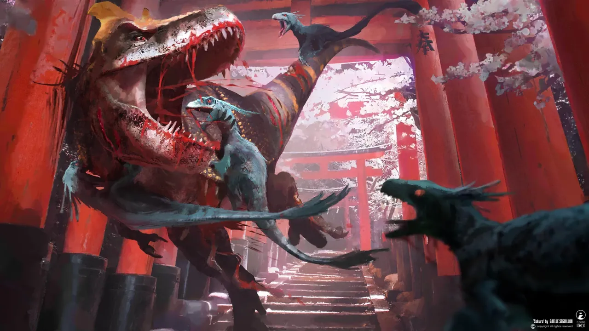
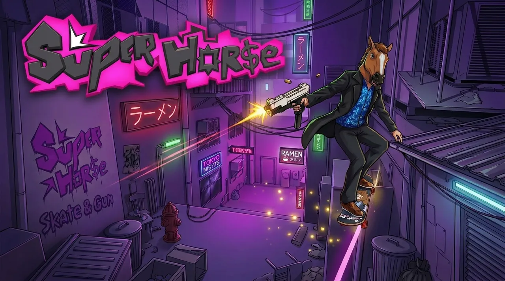
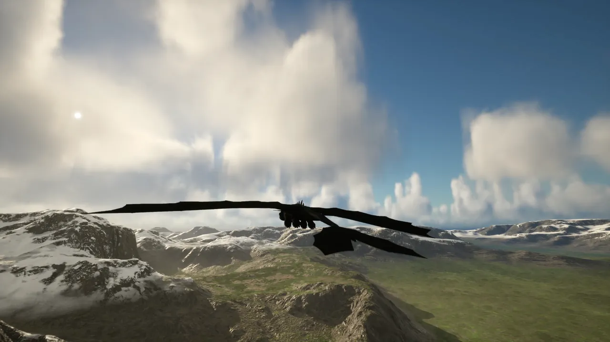
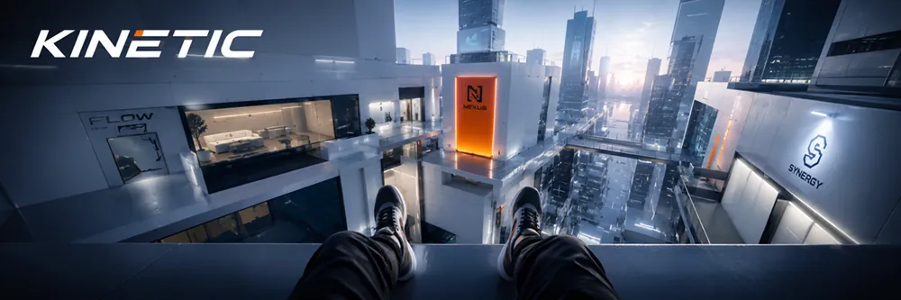
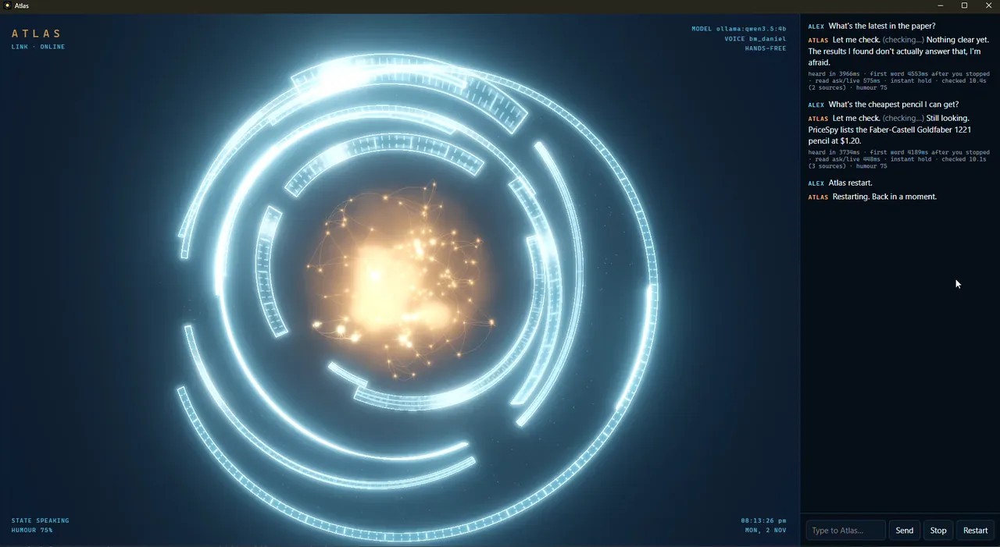
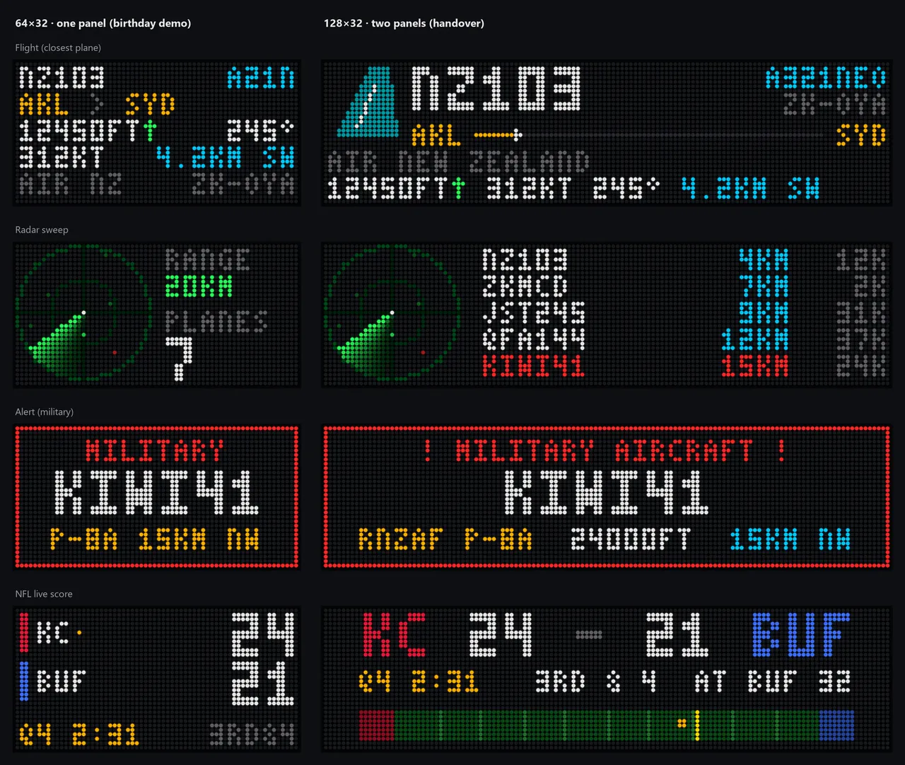
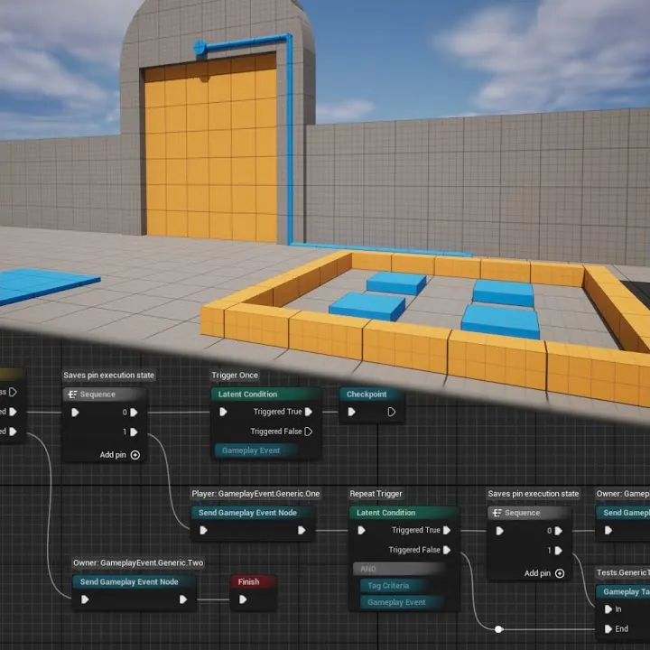

Mar 2026 – present
Senior Game Engineer
Floating Rock Studio
- Automation & review systems
- Gameplay
- Systems
- Tools
- Leadership
- Production tasks
Project: Kyōryū

Senior Game EngineerFloating Rock StudioUnreal EngineNew Zealand
Chapter 01 · About
6years in industry, since 2020
20+Realspace walkthroughs
13side projects, apps & plugins
6platforms, PS5 to Quest
I'm a technical lead who cares about robust code structures, effective tools and meaningful experiences.
Unreal Engine is my home, at work and in my own time: gameplay systems, plugins, editor tools and networking. At work I lead teams and mentor juniors. Outside work I build my own games, plugins and apps, from my own C++ engine to Mythos Party, an indie game I made with my small studio, Skyward Studios. I like sharing what I learn, too.
Chapter 02 · Experience
Mar 2026 – present
Floating Rock Studio
Project: Kyōryū
May 2025 – Mar 2026
The Boundary
Nov 2022 – Feb 2025
Mighty Eyes
Projects: Wanderer, VRAF
Mar 2020 – Oct 2022
Buildmedia
Clients: Toyota, ETNZ, Fisher & Paykel and more
Since 2019
Skyward Studios
Projects: Mythos Party, UnderForge, TossPots, Painted Wings, Stolen Time, Hardlight
2017 – 2019
Media Design School

01Floating Rock Studio · 2026 – now
A story-driven third-person adventure game, where I work as a Senior Game Engineer.
02Mighty Eyes · 2022 – 2025
A time-travel adventure puzzle VR game, and a remake of the original Wanderer. I was the Lead Game Developer at Mighty Eyes: I managed the interactives team, and designed and developed systems for the game and for the VRAF framework.

03Skyward Studios · my studio
An online multiplayer arena brawler on Steam with a collection of mythologies, where you fight other players for the glory of your chosen god. It is a team project that started at university, which we have kept developing at Skyward Studios.
04Mighty Eyes · tool kit
VRAF: an Unreal Engine tool kit for physics-based game development in VR, built alongside Wanderer.
Chapter 04 · Client work · Buildmedia 2020 – 2022
VR, touchscreen and PC experiences in Unreal Engine for property, automotive, sailing, appliance and city-planning clients.
An immersive digital customer experience for the new 2021 Toyota Corolla, for Toyota New Zealand: a VR experience and a configurator to improve the customer journey in the dealership and online.
An interactive masterplan and a VR hot-air balloon for a development near Hamilton: explore the community and its features on screen, or see it first hand from a balloon.
A real-time, interactive experience that showcases and sells unbuilt property, through a simple touch interface or full immersion in a VR headset. We built it as a product of reusable systems, used across dozens of client projects.
An online streaming customer experience built on game engine technology, made closely with the Fisher & Paykel team.
For Spark's 5G experience with Emirates Team New Zealand at the 2020 America's Cup: sail ETNZ's racing yacht between the goals like the real race, with a second player on the foils and rudder.
Build and customise a boat on a tablet, see how well it will perform, then watch it race on the big screen. The second experience for Spark and Emirates Team New Zealand at the 2020 America's Cup.
A digital twin of Wellington City that shows real-time activity across the city, as a platform to improve decision making.
Chapter 05 · Side projects
Indie games, my own engine, and apps and gadgets I've built for myself and friends.

Project · Personal project SuperHorse A third-person skate shooter about a time loop, coming to Steam. Third-personSkate shooterComing to Steam
Project · Personal project HTTYD A dragon flight game: fly Toothless through a mountain range. Flight, animation and a lot of Blender. FlightAnimationUnreal Engine 5
Project · Personal project Kinetic A first-person, narrative-driven parkour game in a sprawling modern megacity. First-personParkourPC Project · Personal project Lifeline Space survival where your station is your lifeline: keep the air, power, food and water running. Space survivalBase buildingSystems Project · Personal project Retail Simulator A chaotic co-op management game about running a busy retail store. Co-opPhysicsMultiplayer Project · Team project UnderForge An online co-op blacksmithing game: forge swords to order while enemies attack. Started at university, expanded later. Online co-opTeam projectUnreal Engine 4 Project · Personal project
Sky Engine
My own game engine and editor in C++, with reflection, serialisation and an on-demand asset manager.
C++EngineEditor
Project · Personal project
Sky Engine
My own game engine and editor in C++, with reflection, serialisation and an on-demand asset manager.
C++EngineEditor

App · Personal app Atlas A local-first, JARVIS-style voice assistant. Nothing in the conversation leaves the PC. PythonOllamaVoiceLocal-first
App · Gadget Radar A DIY LED display of the flights overhead, with its own web UI. Built as a gift. ESP32-S3HUB75 LEDsC++TypeScript App · Personal app Dotzi A life-management app that picks a task in my free time and takes over the screen until I do it. AndroidWindowsKotlinChapter 06 · Plugins
Reusable Unreal Engine plugins I build for my own games. Sky Ability System is open source on GitHub.
Chapter 07 · Archive
Every project, role, plugin, talk and video in one place. Finish the sentence, and watch the query it compiles to.
Project · Mighty Eyes
Wanderer: The Fragments of Fate
Mine
Project · Skyward Studios
Mythos Party
Mine
Project · Personal project
Sky Engine
Mine

Talk · NZGDC 2025 Leveraging the Gameplay Ability System in Unreal Engine MineChapter 08 · Resources
My NZGDC talk on the Gameplay Ability System, and other people's work that helped me learn it.
On stage · NZ Game Developers Conference 2025
How to use GAS as base logic and as agnostic interaction between actors. The talk, the slides and the plugin that grew from the same ideas.
Not mine; credit goes to their authors.